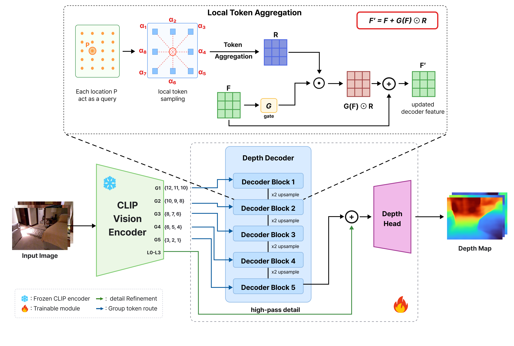

ACCV 2026
SPACE-CLIPv2: Decoding Local Geometry from Frozen CLIP for Monocular Depth Estimation
Decoding local geometry from frozen CLIP tokens through fixed neighborhood aggregation, gated residual updates, and shallow token-detail refinement.